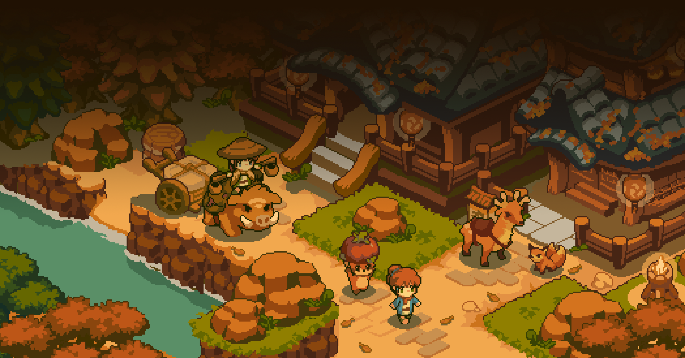

Hello! I like to code and sometime I write stuff too.
Most Recent ExCollege Class Post (10/25)

Yokai Inn
This week I will be straying slightly from focusing on games developed by a single person and focus on the up-and-coming indie game Yokai Inn. This game is not entirely different from games previous, as Yokai Inn is still being developed by a very small team at ShibaPixels, with Moonsailor composing the music and handling the sounds for the game. ShibaPixels is using Unity Game Engine for development and is creating the artwork through the animated sprite and pixel art tool Aseprite. Yokai Inn’s graphics are very aesthetic – they are a mix between conventional 32-bit pixilated games and an oil painting. There is a smoothness to the artwork that you don’t get from most pixilated games, and it makes for a very calming and peaceful art-style. The game’s graphics were inspired by another game “Frontier Story” being developed by another solo developer @jmw327.
The gameplay could be described as a life-sim game similar to that of Stardew Valley. The concept of the game is you run and manage an inn during the Taishō era in Japan. Your tasks are related to farming, cooking, crafting tools and goods, customizing your inn, raising animals, and befriending the town folk. A large component of the game is the yokai, which traditionally are known in Japanese folklore as supernatural entities which can range from being friendly and helpful to malevolent and mischievous. In Yokai Inn, they can be thought of as spirits or ghosts that take the shape of animals and otherworldly shapes.
Although this game is in early development, it is interesting to see how many outlets the game already has for promotion. Going to ShibaPixel’s linktr.ee, you can see they have a Discord server, a YouTube channel, a Twitter, a website, and a mailing list. The game does not have a firm timeline yet, but it seems as though it is at least a year out, yet @ShibaPixels already has ~29k followers on Twitter, a few thousand views on YouTube, and an extensive FAQ section on their website. The user interaction has begun, and the game is not yet playable – there are some trailers and GIFs that show general gameplay and the art style, but regardless the game has already built a following. It is very interesting to see how Yokai Inn has leveraged social media platforms from a very early stage to grow their popularity. This fits in with the indie game community very well as the game becomes more personalized and players can watch as the game is slowly developed with their voices being heard along the way. One potential pitfall of this, is it sets expectations high. With a large buildup and an eagerly waiting user base, Yokai Inn has to deliver. Many large triple-A platforms release buggy (and sometimes arguably unplayable) versions and fix patches along the way and that is generally accepted. For a small development studio like ShibaPixels with a steadily growing following, releasing a buggy game will not bode well for its success. The expectation will be that the game was made with its users in mind and having an underwhelming launch might take away from that “personalization.”
All that being said, I am very excited for Yokai Inn, and I look forward to watching the game progress over the next few months (or even years). If you’re interested in checking out the game at all, find out more through ShibaPixels’
linktr.ee